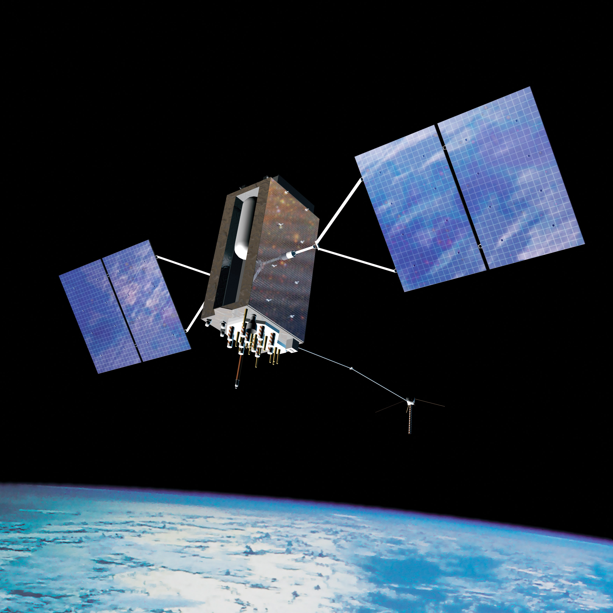
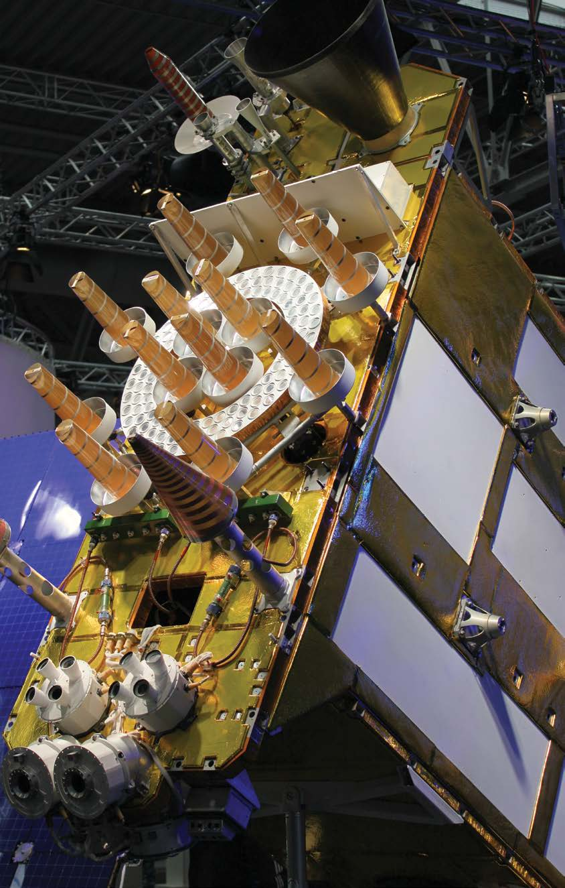
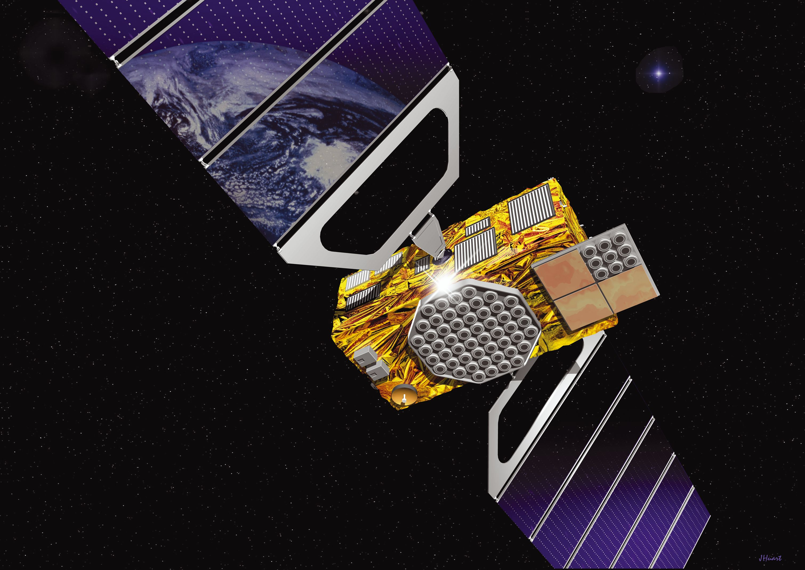
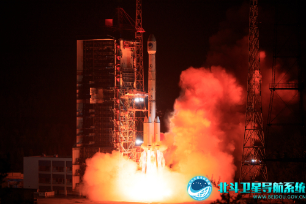
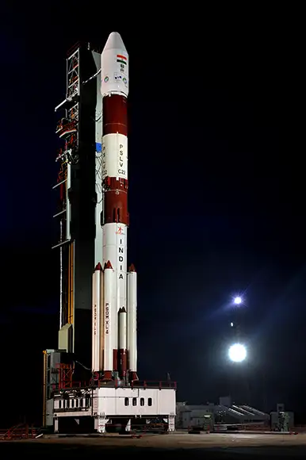
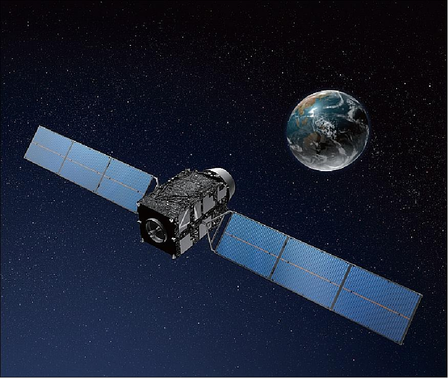

GPS (Global Positioning System)
The Global Positioning System (GPS) is a U.S.-owned service that provides users with positioning, navigation, and timing services. It consists of three segments: the space segment, the control segment, and the user segment. The system includes up to 32 medium Earth orbit satellites arranged in six orbital planes, with 31 operational satellites currently in orbit, providing L1 (1575.42 MHz), L2 (1227.60 MHz), and L5 (1176.45 MHz) frequency support.
Visit GPS Official WebsiteGLONASS (Global Navigation Satellite System)
GLONASS, initially developed by the Soviet Union and now operated by Russia, is a satellite-based navigation system that provides civilian radio navigation-satellite service and is used by the Russian Aerospace Defence Forces. It achieved full global coverage in 1995 and currently has 24 active satellites. The GLONASS control segment includes the system control center and a network of command tracking stations across Russia. Similar to GPS, it monitors satellite health and uploads corrections twice a day. GLONASS satellites transmit at slightly different L1 and L2 frequencies, with P-code and C/A codes on both. This technique is known as frequency division multiple access (FDMA).
Visit GLONASS Official WebsiteGalileo
The European Union and European Space Agency introduced the Galileo positioning system as an alternative to GPS. It became operational on December 15, 2016. The full constellation consists of 24 active satellites, and the system is expected to be compatible with GPS, offering increased accuracy when combined. The main modulation used in the Galileo Open Service signal is the Composite Binary Offset Carrier (CBOC) modulation, transmitting along the L-Band spectrum at various frequencies.
Visit Galileo Official WebsiteBeiDou
The BeiDou Navigation Satellite System (BDS) is an independent system China operates to meet national security and development needs. It provides high-accuracy positioning, navigation, and timing services globally. The BDS has three generations, each with advanced features and improved capabilities. The system consists of multiple satellites in different orbits to ensure better performance and coverage, and it offers various services including navigation, communication, search and rescue, and precise positioning. BeiDou satellites currently transmit several signals, including B1I (1561.098 MHz), B1C (1575.42 MHz), B2a (1175.42 MHz), B2I and B2b (1207.14 MHz), and B3I (1268.52 MHz).
Visit BeiDou Official WebsiteNavIC
The NavIC, or NAVigation with Indian Constellation, is a regional satellite navigation system developed by the Indian Space Research Organisation (ISRO). It consists of 7 navigational satellites providing precise positioning within and around India, with the goal of complete Indian control over the system. In 2018, the NavIC system became available for public use. NavIC provides a standard positioning service for civilian use and a restricted service for authorized users, including the military. The system is expanding to include 11 satellites and plans to become a global system with 24 MEO satellites. It offers services in L5 (1176.45 MHz) and S-band (2498.028 MHz) and covers India and a region up to 1500 km beyond the Indian boundary. The system also introduces a new civilian signal in the L1 band (1575.42 MHz) and all forthcoming satellites will broadcast SPS signals in the L1, L5, and S bands.
Visit NavIC Official WebsiteQZSS
The Quasi-Zenith Satellite System (QZSS) consists of four satellites that provide regional time transfer and enhance GPS coverage in Japan and the Asia-Oceania regions. QZSS services were available on a trial basis starting from January 12, 2018, and officially started in November 2018. The first satellite was launched in September 2010. Additionally, an independent satellite navigation system with 7 satellites is planned to be launched in 2023.
Visit QZSS Official Website